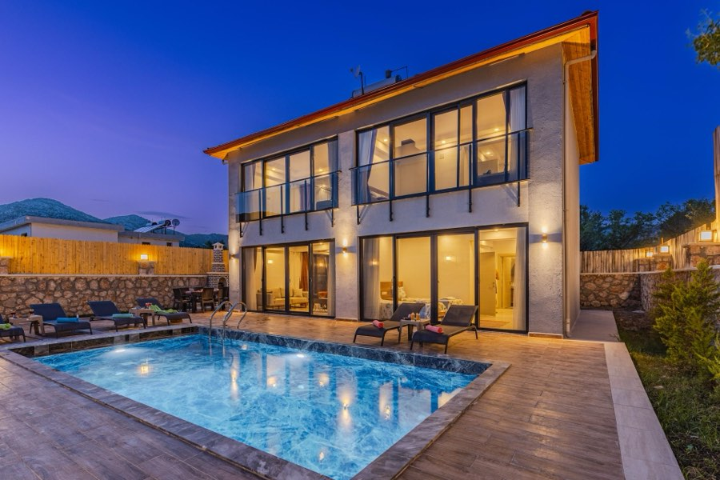
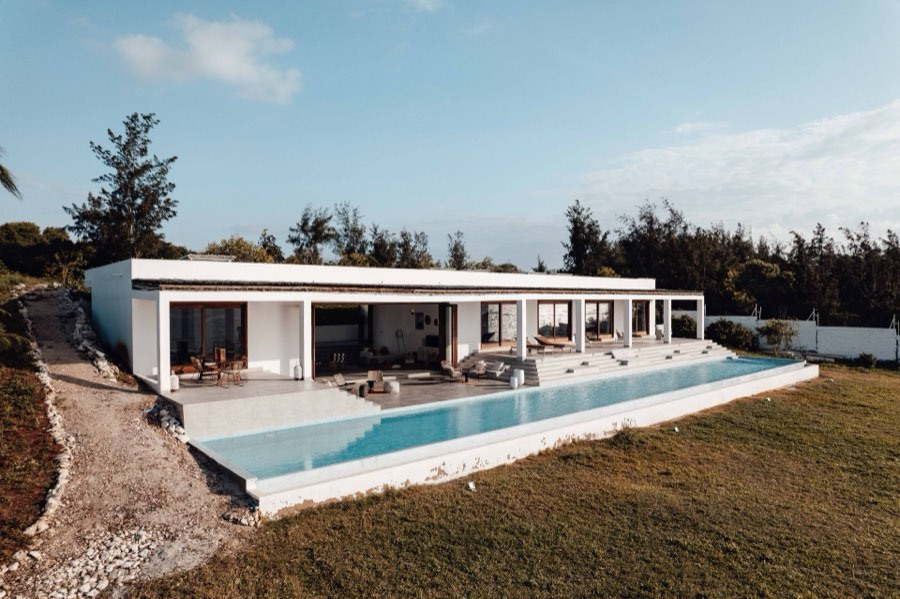
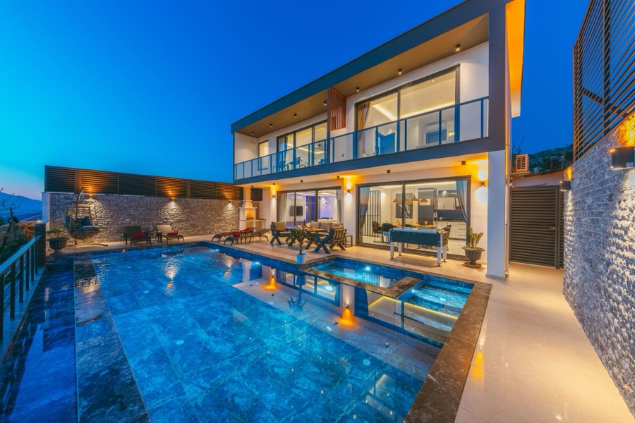
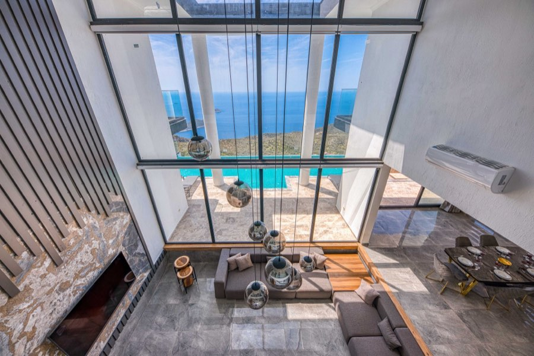
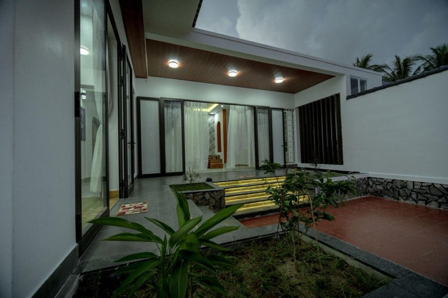
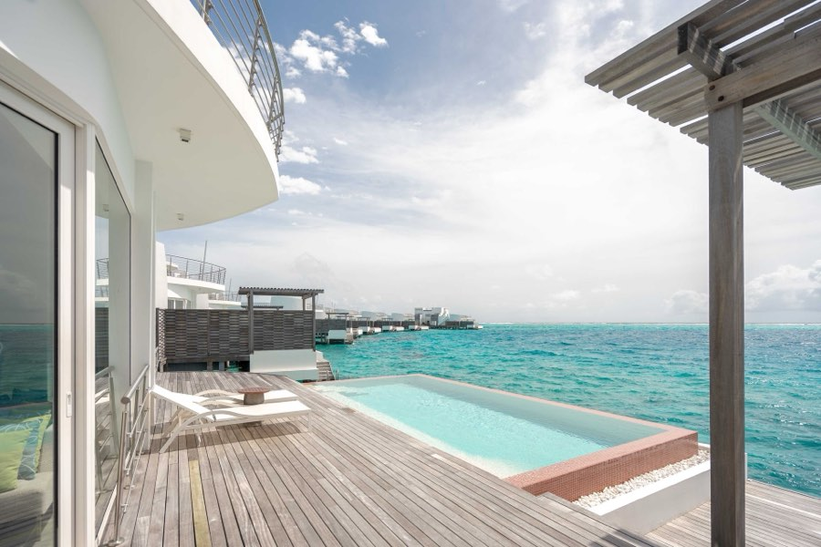

Pinned horizontal gallery
The signature moment. The section pins to the viewport and vertical scroll is translated into horizontal travel across the collection. Shown here as a native scroll rail so it is reviewable in a static card — drag it sideways.
Selected work
Each house is represented exclusively, photographed once, and shown in the order it was taken on.

01

02

03

04

05

06
How the pin works
scrub: 1 — tied to the scrollbar with a 1s catch-up so it feels weighted
rather than snapped.ScrollTrigger.refresh() fires after fonts and images settle, or the pin
length is computed against the wrong height.region with a label, so keyboard users can arrow
through it without a drag gesture.Degradation